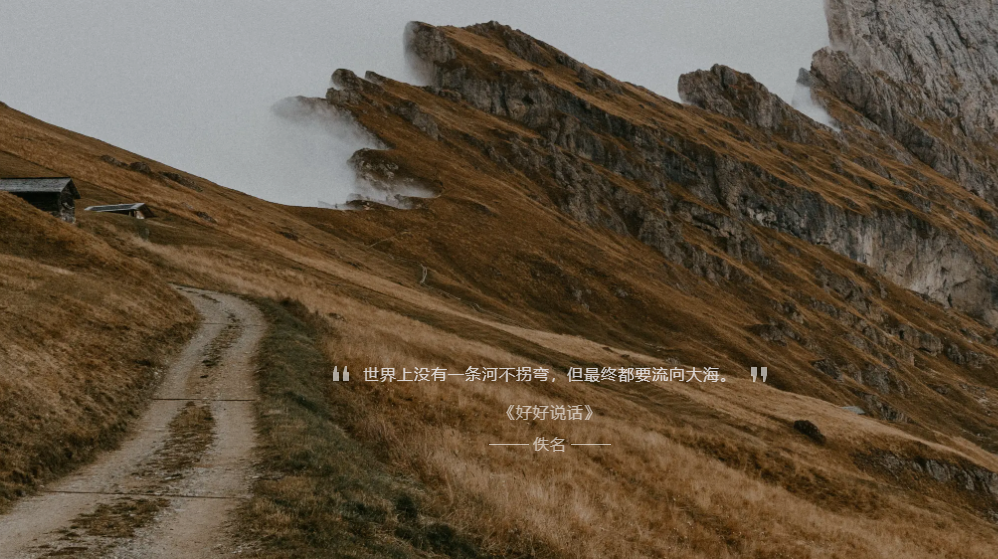
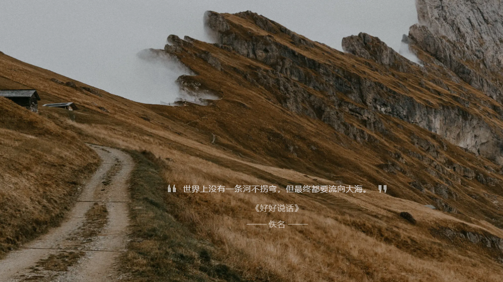
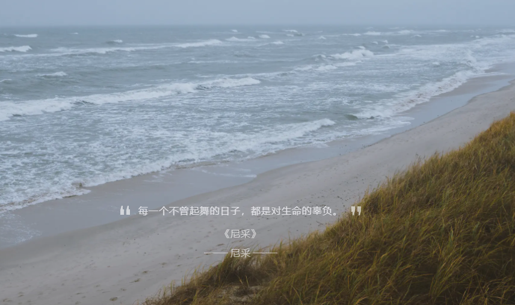
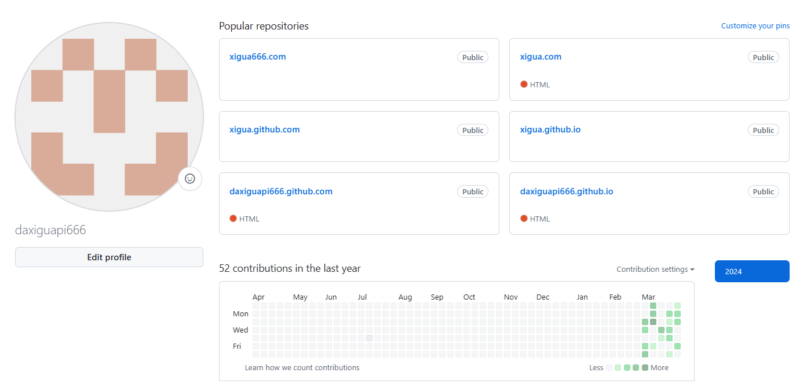
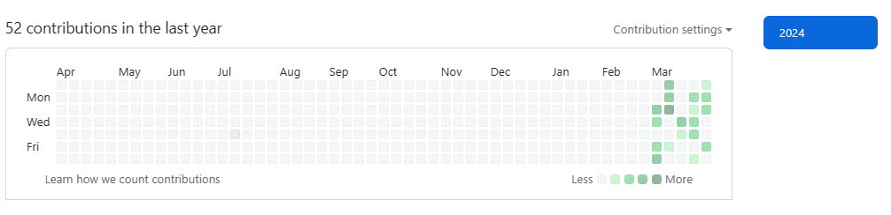
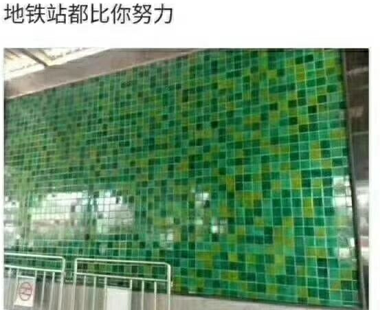

西瓜的第一篇日记
这是我第一次在西瓜的日记上发布的内容。happy to 能够通过这个渠道和大家分享我的一些想法和经历。我希望未来能够在这里和大家分享更多的内容，也希望能够结识更多志同道合的朋友。欢迎大家来到我的博客！
欢迎访问！请记住西瓜的聊天室网址： —— http://xigua.rovn.ink/
这是我第一次在西瓜的日记上发布的内容。happy to 能够通过这个渠道和大家分享我的一些想法和经历。我希望未来能够在这里和大家分享更多的内容，也希望能够结识更多志同道合的朋友。欢迎大家来到我的博客！
欢迎访问！请记住西瓜的聊天室网址： —— http://xigua.rovn.ink/
PS：只需一点米（40以内），定制自己的网站或域名，款式很多。稍后我会发详细说明，有意者请在留言区留言！
欢迎访问！请记住西瓜的留言区： —— http://xigua.rovn.ink/
这个网站我用的GitHub的个人主页来搭建的，然后自己上传编好的html文件。
GitHub是啥？百度的解释是：GitHub于2008年4月10日正式上线，除了Git代码仓库托管及基本的Web管理界面以外，还提供了订阅、讨论组、文本渲染、在线文件编辑器、协作图谱（报表）、代码片段分享（Gist）等功能。截止到2022-11-17，其注册用户已经超过9400万，托管版本数量也是非常之多，其中不乏知名开源项目Ruby on Rails、jQuery、python等。
说通俗些就是一个将自己的计算机项目托管的平台。而且有很多都是优秀的开源项目，比如RLHF+PaLM、RATH等我只能说个名字而还没配置过的项目
下图就是我的个人仓库主页，讲到这里我就不得不提及一个关于贡献墙（下方的那个图表）的梗   贡献墙上每个小格子对应的是你当天的工作数，格子颜色越深工作量越大， 而有一张这样的图  自愧弗如。。。觉得写的不错的，去主页公告栏赏西瓜一杯奶茶吧PS：只需一点米（40以内），定制自己的网站或域名，款式很多。稍后我会发详细文章，有意者请在留言区留言！
欢迎访问！请记住西瓜的留言区： —— http://xigua.rovn.ink/